SOBRE MIM
Sou a Mariana Carreira, designer gráfica, ilustradora, criativa multidisciplinar e fundadora da marca "design à Carreira". Trabalho com identidade visual, logótipos, design editorial, conteúdos multimédia, cartazes e ilustração, desenvolvendo soluções visuais funcionais, consistentes e com intenção. Domino ferramentas como Illustrator, Photoshop, InDesign, Affinity e Figma, criando projetos que combinam técnica, clareza e expressão visual.
